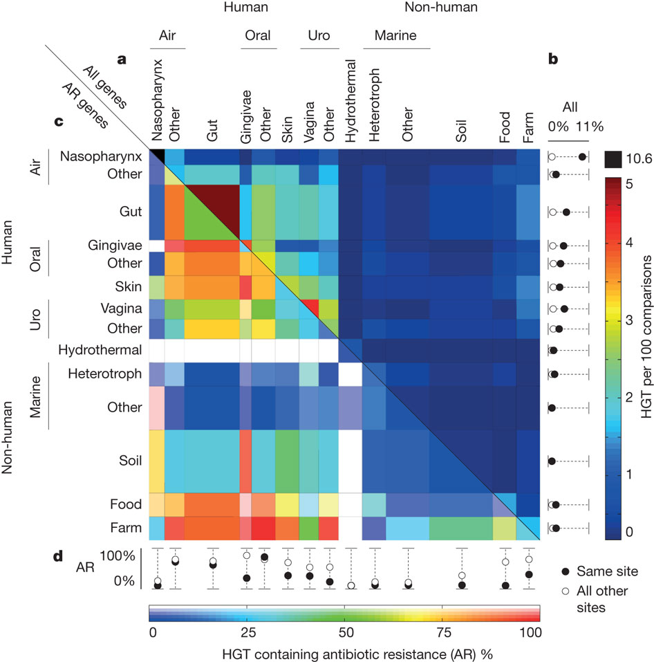

Recent Highlights
Policy: How to regulate faecal transplants.Nature. 2014 Feb 19

For medical use, human stool should be considered a tissue, not a drug, argue Mark B Smith, Colleen Kelly and Eric J Alm.
Related links:
OpenBiome.org
In New York Times
Science. 2012 Apr 6;336(6077):48-51.
 Shapiro BJ, Friedman J, Cordero OX, Preheim SP, Timberlake SC, Szab G, Polz MF,
Alm EJ.
Shapiro BJ, Friedman J, Cordero OX, Preheim SP, Timberlake SC, Szab G, Polz MF,
Alm EJ.Program in Computational and Systems Biology, Massachusetts Institute of Technology, Cambridge, MA 02139, USA.
Abstract
Genetic exchange is common among bacteria, but its effect on population diversity during ecological differentiation remains controversial. A fundamental question is whether advantageous mutations lead to selection of clonal genomes or, as in sexual eukaryotes, sweep through populations on their own. Here, we show that in two recently diverged populations of ocean bacteria, ecological differentiation has occurred akin to a sexual mechanism: A few genome regions have swept through subpopulations in a habitat-specific manner, accompanied by gradual separation of gene pools as evidenced by increased habitat specificity of the most recent recombinations. These findings reconcile previous, seemingly contradictory empirical observations of the genetic structure of bacterial populations and point to a more unified process of differentiation in bacteria and sexual eukaryotes than previously thought.Nature. 2011 Oct 30;480(7376):241-4.
Chris S Smillie; Mark B Smith; Jonathan Friedman; Otto X Cordero; Lawrence A David; Eric J AlmComputational and Systems Biology Initiative, Massachusetts Institute of Technology, Cambridge, Massachusetts 02139, USA. . 
Abstract
Horizontal gene transfer (HGT), the acquisition of genetic material from non-parental lineages, is known to be important in bacterial evolution. In particular, HGT provides rapid access to genetic innovations, allowing traits such as virulence, antibiotic resistance and xenobiotic metabolism to spread through the human microbiome. Recent anecdotal studies providing snapshots of active gene flow on the human body have highlighted the need to determine the frequency of such recent transfers and the forces that govern these events. Here we report the discovery and characterization of a vast, human-associated network of gene exchange, large enough to directly compare the principal forces shaping HGT. We show that this network of 10,770 unique, recently transferred (more than 99% nucleotide identity) genes found in 2,235 full bacterial genomes, is shaped principally by ecology rather than geography or phylogeny, with most gene exchange occurring between isolates from ecologically similar, but geographically separated, environments. For example, we observe 25-fold more HGT between human-associated bacteria than among ecologically diverse non-human isolates (P = 3.0 x 10(-270)). We show that within the human microbiome this ecological architecture continues across multiple spatial scales, functional classes and ecological niches with transfer further enriched among bacteria that inhabit the same body site, have the same oxygen tolerance or have the same ability to cause disease. This structure offers a window into the molecular traits that define ecological niches, insight that we use to uncover sources of antibiotic resistance and identify genes associated with the pathology of meningitis and other diseases.Nature. 2011 Jan 6;469(7328):93-6.
David LA, Alm EJ.Computational and Systems Biology Initiative, Massachusetts Institute of Technology, Cambridge, Massachusetts 02139, USA. .